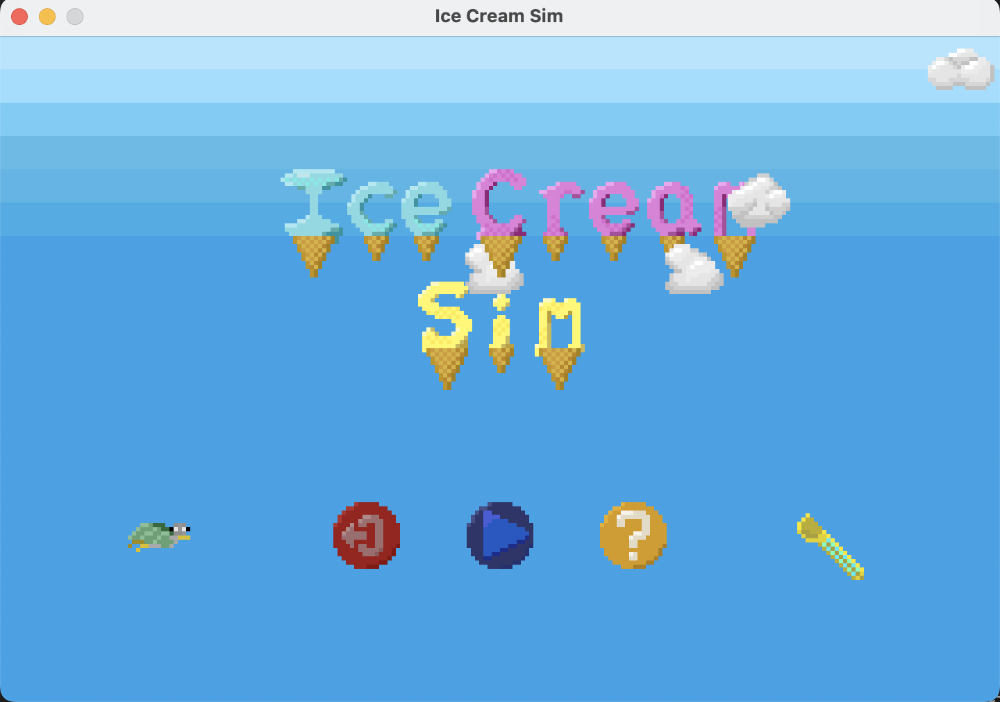
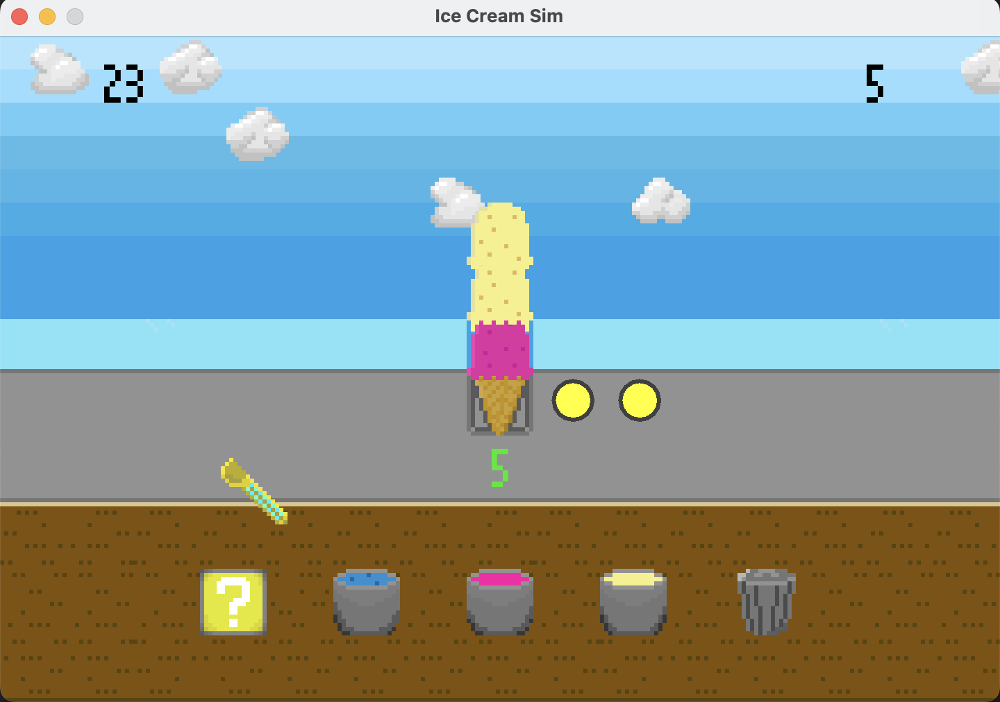
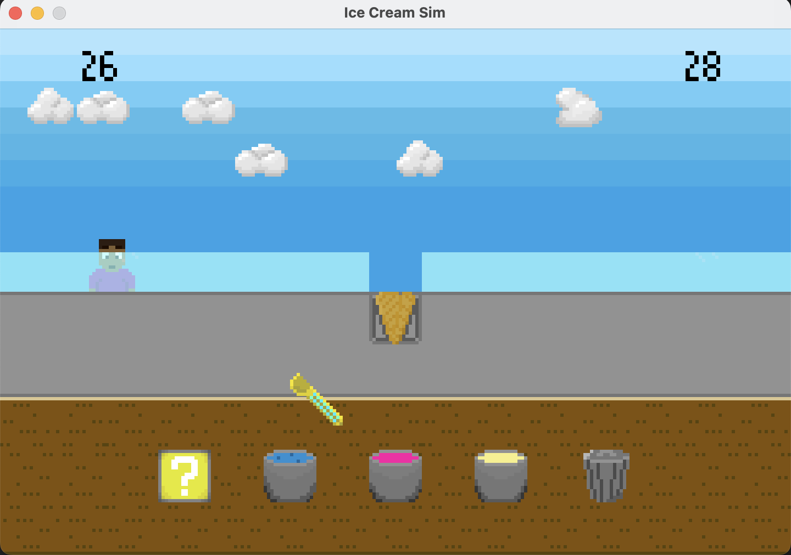

My Projects
SkillVest
A financial management platform allowing users to track investments, organize financial goals, estimate taxes, and create budgets!
We used AWS, Kubernetes, and Docker for deployment and CI/CD. The backend, powered by the Spring framework, connects to a cloud-hosted documentDB instance. For security, we implemented OAuth2.0. The frontend, designed with React, follows the standards of the U.S. Web Design System (USWDS). We conducted testing using JUnit for the backend and Jest for the frontend. Additionally, we included internationalization using i18next, providing support for both Spanish and English.
I was mainly responsible for the frontend investments page and am proud of the features I was able to include. Users can track their stock investments with real-time data from the AlphaVantage API. The demo below showcases the service's capabilities. This project served as a valuable learning experience, equipping me with industry-relevant skills and technologies!
Ice Cream Simulator
This project is a simple 2D game/simulator built in Java. It utilizes the Abstract Window Toolkit (AWT) for its graphical user interface, demonstrating fundamental concepts of GUI creation and event handling in Java. Developing this project reinforced my understanding of core Java programming principles, object-oriented design, implementing a basic game loop for managing application state and rendering, and organizing a codebase, providing valuable experience in building interactive Java applications from the ground up.
This project is available on Github. If you want to try it out on your computer, download the jar here ( Java required ): link
Run it my double-clicking the file, or navigate to the files location from your terminal and run java -jar IceCreamSimulator.jar
  